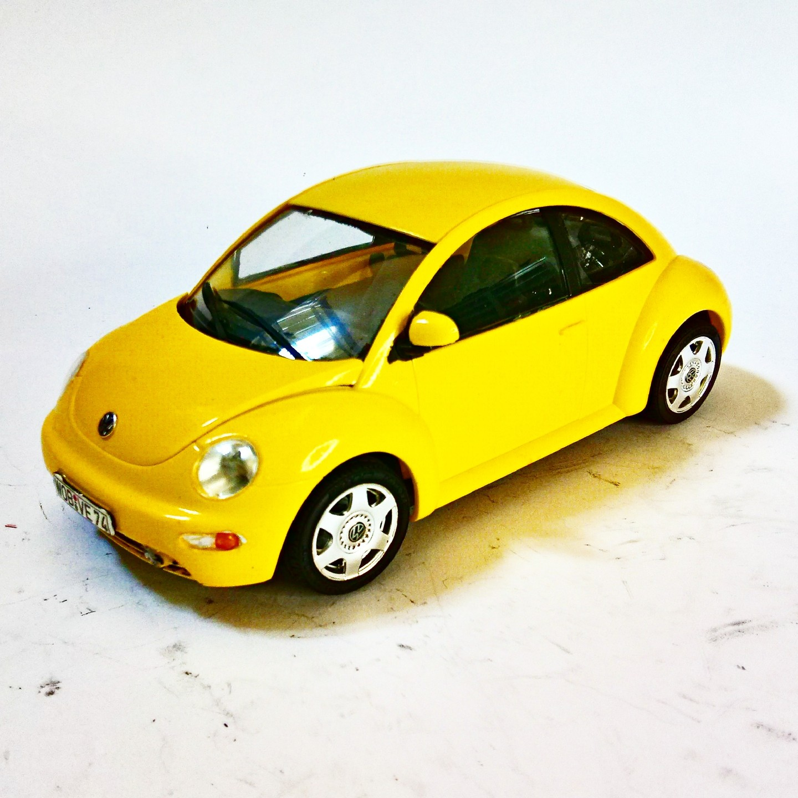

Auto e veicoli stradali · scale model archive
Volkswagen 'New Beetle'
Volkswagen 'New Beetle' — Kit: Tamiya, Scale: 1/24. This car caused a sensation in year 2000 and inspired a retro mania which then quicly faded away soon…

Photo gallery
English description
This car caused a sensation in year 2000 and inspired a retro mania which then quicly faded away soon afterwards
#1/24 #Tamiya
Descrizione italiana
Questo auto caused una sensation in year 2000 e inspired una retro mania which then quicly faded away soon afterwards.